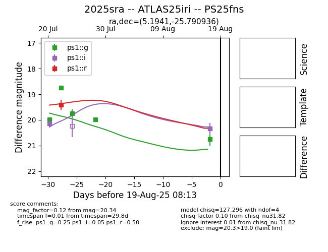

Target 2025sra at 2025-08-19 08:13, see:
TNS: wis-tns.org/object/2025sra
YSE: ziggy.ucolick.org/yse/transient_detail/2025sra
alt names
2025sra (yse,tns)
PS25fns (panstarrs)
ATLAS25iri (atlas)
coordinates:
equatorial (ra, dec) = (5.1941,-25.79094)
galactic (l, b) = (42.2331,-83.00975)
photometry
last ps1::g=20.76, ps1::i=20.34, ps1::r=19.41
5 ps1::g, 2 ps1::i, 1 ps1::r detections
